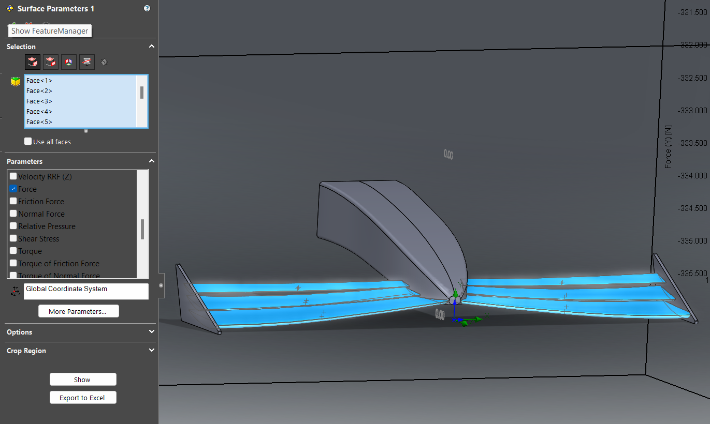
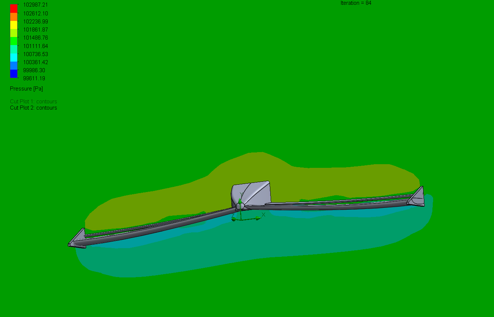
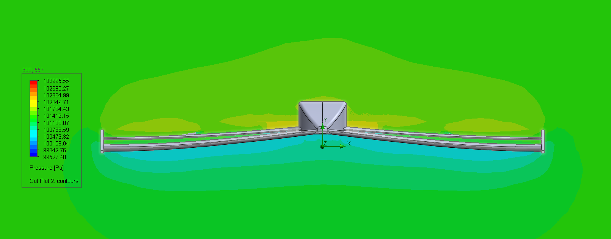
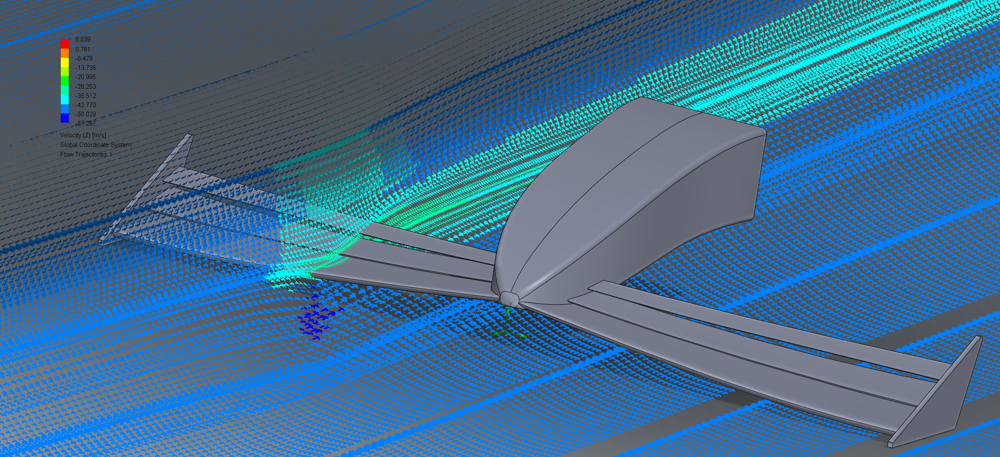
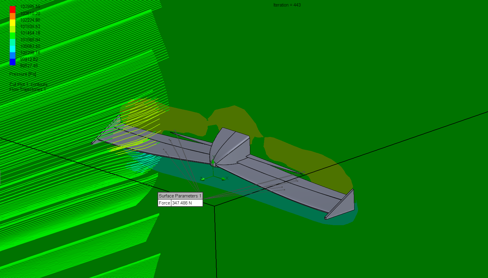

PROJECT DEEP-DIVE
A self-taught deep dive into SolidWorks Premium's Flow Simulation tool — designing a multi-element Formula 1-style front wing from scratch and running CFD to measure the downforce it generates at 100 mph.
Modeled a multi-element F1-style front wing — main plane, flap, and endplates — in SolidWorks, purely to teach myself SolidWorks Premium's Flow Simulation add-in from the ground up. No class, no team — just curiosity about F1 aero and a reason to learn a CFD tool properly instead of skimming a tutorial.
Ran an external flow analysis at 100 mph and used Surface Parameters to isolate the wing's underside faces and integrate the pressure load across them. The result: 347.486 N of downforce, about 78 lbf, generated by the wing alone at that speed. The pressure contours below show the low-pressure region forming under the wing that drives that load, and the velocity trajectories show the endplates doing their job containing the wingtip vortex instead of letting it bleed outward.




